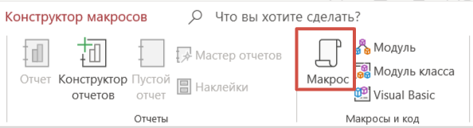
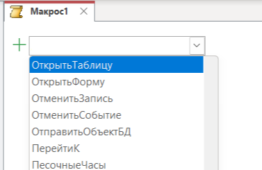
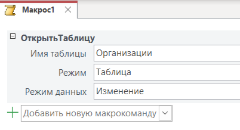
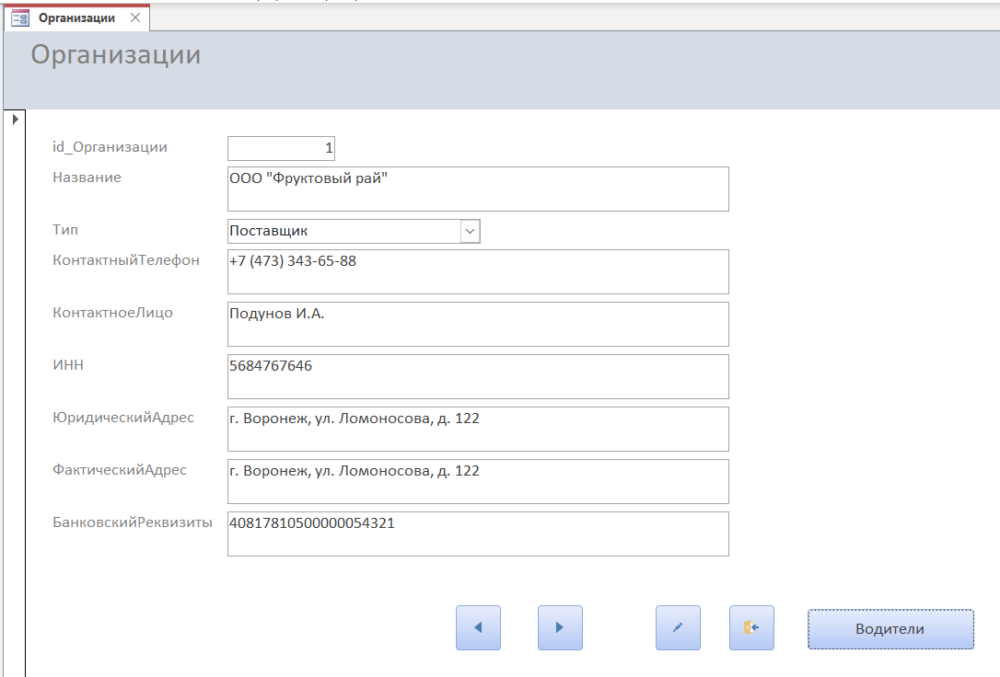
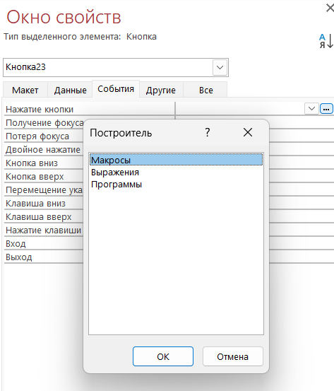
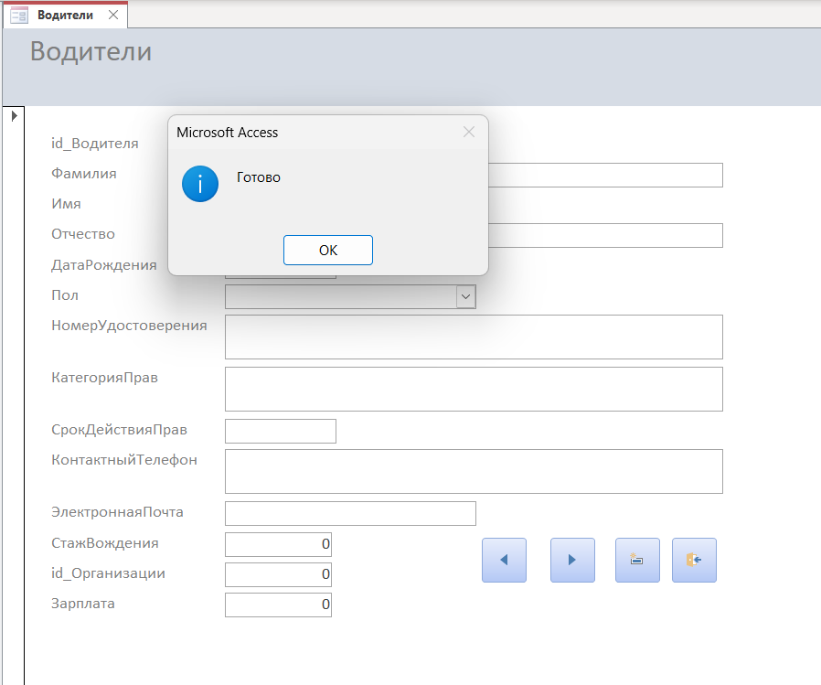

Разработка форм ввода данных
Теоретическая часть
Цель работы: Приобретение практических навыков создания и использования макросов в Microsoft Access для автоматизации часто выполняемых задач.
Основные понятия:
Макрос в MS Access представляют собой мощный инструмент автоматизации, который позволяет объединять последовательности действий в единые исполняемые блоки. Макросы позволяют автоматизировать рутинные операции, создавать реакции на события, а также упрощать взаимодействие пользователя с базой данных
Типы макросов:
— Автономные макросы – это независимые объекты базы данных, которые сохраняются в общей коллекции макросов и могут быть вызваны вручную или по расписанию из любого места приложения. Они существуют как самостоятельные элементы навигации и не привязаны к конкретным событиям или объектам.
— Встроенные макросы – это макросы, которые непосредственно ассоциированы с конкретными событиями объектов базы данных (форм, отчетов, элементов управления) и автоматически активируются при наступлении соответствующего события.
— Группы макросов – это специальные контейнеры, объединяющие несколько логически связанных макросов в единую структуру с возможностью условного выполнения и повторного использования отдельных блоков кода.
Основные макрокоманды:
— Открытие/закрытие объектов
— Навигация по записям
— Сообщения пользователю
Применение макросов:
— Автоматическое заполнение полей
— Проверка данных при вводе
— Создание кнопочных интерфейсов
— Запуск сложных последовательностей действий
Практическая часть
1. Запустите Microsoft Access
2. Откройте базу данных «Логистика»
3. Для работы с макрокомандами в Microsoft Access перейдем на вкладку «Создание» и нажмите на кнопку «Макрос»

4. Создадим простой макрос на открытие таблицы «Организации», для этого нажимаем на стрелку
5. В выпадающем списке выбираем команду «ОткрытьТаблицу»

6. Выбираем имя таблицы, которую хотим открыть с помощью макрокоманды, в данном примере выбираем таблицу «Организации»

7. Сохраняем макрокоманду под названием «ТаблицаОрганизации». Теперь при нажатии на макрокоманду у нас автоматически открывается таблица «Организации»
8. Теперь сделаем более сложную макрокоманду. Создадим новую кнопку на форме «Организации» при нажатии на которую будет открываться форма «Водители», при этом форма «Организации» будет автоматически закрываться и после всех выполненных действий у нас будет высвечиваться надпись «Готово»
9. Открываем форму «Организации» и добавляем новую кнопку, у нас откроется окно с выбором команды, нажимаем на кнопку «Отмена».
10. Кнопка создана, теперь на эту нажимаем правой кнопкой мыши и выбираем свойства.
11. Изменяем свойство «Подпись», даем имя нашей кнопке «Водители»

12. После переходим на вкладку «События» и выбираем пункт «Нажатие кнопки», в открывшемся окне построителя выбираем «Макросы»

13. В открывшемся окне выбираем первую макрокоманду «ОткрытьФорму»
14. Поле Имя формы выбираем «Водители», остальное остается без изменений,
15. Вторая макрокоманда будет «ЗакрытьОкно»: Тип объекта – Форма, Имя объекта «Организации», третья макрокоманда будет «Окно сообщения»: Сообщение – Готово, Тип – Информационное и сохраняем нашу макрокоманду и закрываем.

16. Создайте макрос, который открывает таблицу «Водители»
17. Создайте макрос, который выводит сообщение «Добро пожаловать» при открытии формы «Продукция»
18. Создайте макрос, который обновляет все записи в форме «Местоположения» при нажатии кнопки «Обновить»
19. Сохраните проект "Логистика"
20. Закройте проект